← 返回阅读库 · 原论文目录
论文讲解阅读文档 · 表征学习 · v182
Towards Better Understanding of Self-Supervised Representation[2203.01881]
视频时长 00:07:45；讲解文字 3,833 字符；提取讲解画面 25 张。按视频原顺序阅读，每段文字保留时间戳。
文字来自整段视频的自动语音转写，按自然停顿分段，并与 PPT / 论文页面 / 演示画面对齐。未将讲解压缩为摘要；术语、数字和口述公式请结合画面及原论文核对。 阅读稿已校正规范部分明确术语误识别；原始逐字稿和每处修改记录另行保留。
讲解画面为源视频截图（640×360），不是可编辑 PPT 文件。全片按每秒 2 帧扫描内容变化，逐步展开页保留；连续动画保留代表画面。清晰度受源视频限制。
下载完整资料包 · 含离线 HTML、PDF、Word、全部 PPT 画面和字幕。
原论文与材料
Measuring Self-Supervised Representation Quality for Downstream Classification using Discriminative Features · 下载完整 PDF（18 页）
按时间阅读
00:00:00–00:00:20 · 画面 001
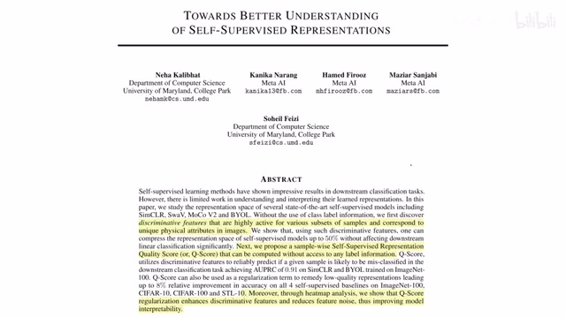
00:00:00–00:00:20 · 画面 001大家好,今天我们来快速数一篇论文 Towards Better Understanding of Self-Supervised Representations。这篇论文从 title 来看是一个我们非常感兴趣的事情，就是 self-supervised learning 这些方法他们学到这些 representation 它究竟有什么样的特性。但实际来看这个标题有一些夸大的嫌疑。我们仔细来看，首先我们能通过这个 self-supervised learning 学到这个 representation 它具有什么样的性质呢
00:00:20–00:00:29 · 画面 002
00:00:20–00:00:29 · 画面 002可以看到这里呢，作者列出了这一个图。那这个图的横轴呢是不同的这个 feature，比如说是 512 个 dimension，所以呢有 512 列。然后纵轴呢，每一行呢就是随机在 ImageNet 这个 validation set 里面采出来一个样本。你可以看到他们的 representation 总体来说呢有一个特点就是它是非常稀疏的。对于每一个 representation 来说，只有某一两个位置他们的这个值比较突出
00:00:29–00:00:30 · 画面 003
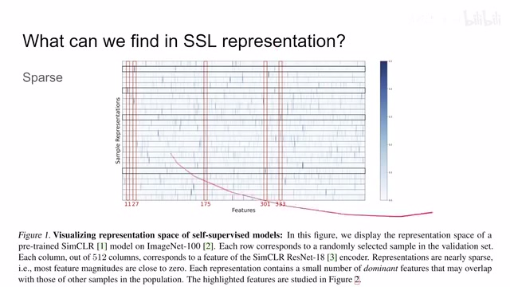
00:00:29–00:00:30 · 画面 00300:00:30–00:00:34 · 画面 004
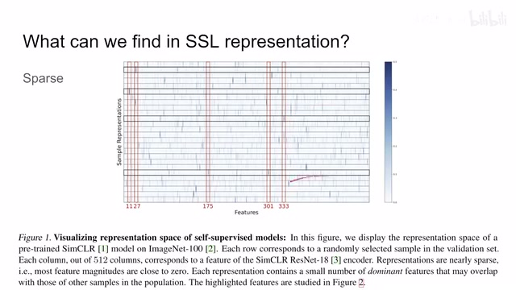
00:00:30–00:00:34 · 画面 00400:00:34–00:00:35 · 画面 005
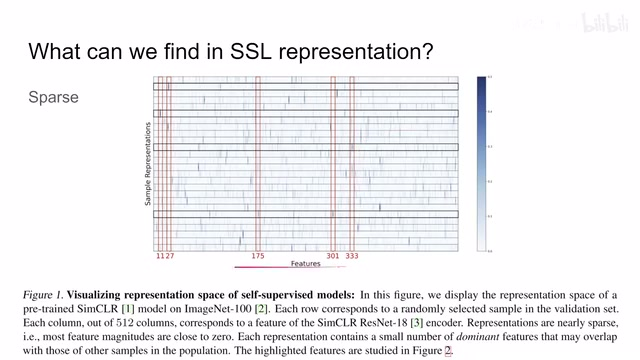
00:00:34–00:00:35 · 画面 00500:00:35–00:00:52 · 画面 006
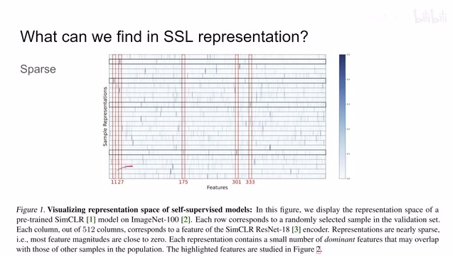
00:00:35–00:00:52 · 画面 00600:00:52–00:01:01 · 画面 007
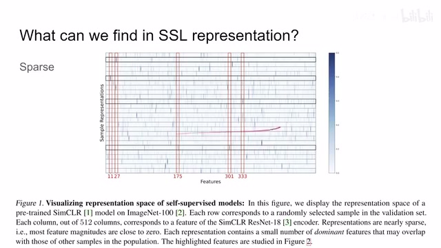
00:00:52–00:01:01 · 画面 007当然这是我想吐槽的，针对全文的第一个点，也就是明明我们有很多衡量 sparsity 就是稀疏性的这些方法，它为什么一定要只研究这几个样本做出这么一个图来不适合理解。但是总的来说，我们假如相信这个结论，就是我们所有的 representation 出来，虽然每一个 vector 是长度是 512 的，但是其中只有很少的一部分它的值是远大于 0 的
00:01:01–00:01:22 · 画面 008
00:01:01–00:01:22 · 画面 008其他的值呢都是很接近于 0 的这样一个现象。那么根据以上的观察呢，作者就这里定义了一种叫做 dominant features。我找出这 512 个数里面哪一个它的表现作为突出，哪一个值它显得很异常。这里它统计了这 512 个数值的这个平均值和这个标准差。然后呢，平均值加上 4 倍的标准差。如果某一个 feature 大于这个平均值加上 4 倍的标准差这么一个值，那么我们就认为这个 feature
00:01:22–00:01:23 · 画面 009
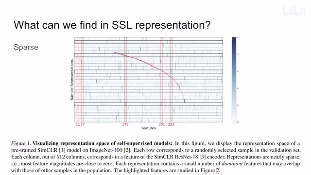
00:01:22–00:01:23 · 画面 00900:01:23–00:01:24 · 画面 010
00:01:23–00:01:24 · 画面 01000:01:24–00:01:53 · 画面 011
00:01:24–00:01:53 · 画面 011就是这个 vector 里面的这一个 element 它呢叫做 dominant feature。也就是我们这张图里面颜色深的这一条条它们叫做 dominant features
00:01:53–00:01:59 · 画面 012
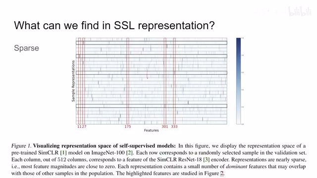
00:01:53–00:01:59 · 画面 01200:01:59–00:02:12 · 画面 013
00:01:59–00:02:12 · 画面 013那么有了这样一个定义呢，作者发现我们在做分类任务的时候，针对特定的类，那么某一个 feature 对于这一类中大部分的图像，比如说这里 80%接近 80%对吧，这里 70%对于这样大比例的这个图像，这个特定的 feature 它都是 dominant feature。也就是说，某些 feature 呢，也就是这个 representation 中的某一个 element 呢跟我们的这个分类的这个图像的这个类别它是有很强的联系的
00:02:12–00:02:13 · 画面 014
00:02:12–00:02:13 · 画面 01400:02:13–00:02:36 · 画面 015
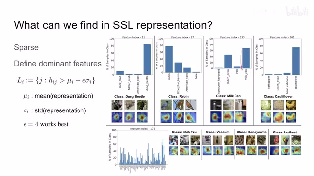
00:02:13–00:02:36 · 画面 015那么当然既然有很强联系的类，当然也有就是联系不太强的类。你看到 175 这个 feature 它在很多类的图像中都算是 dominant feature 是这样一个区别
00:02:36–00:03:58 · 画面 016
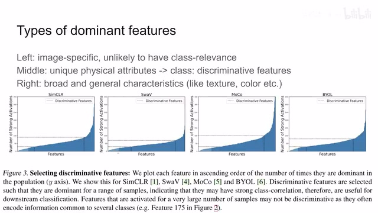
00:02:36–00:03:58 · 画面 016那基于此呢，作者进行了更深的统计啊。我们来看到这张图啊，首先它是不同的学习方法学出来的 representation，它的横轴呢代表着 512 个 feature 里面的每一个 feature。当然顺序呢是根据这个纵轴的这个值排序的。那么纵轴呢是这个 feature 在所有的这些样本的 representation 当中是 dominant feature 的数量。那么按照这个数量排序之后，你发现像这一部分的这些 feature这些它们出现次数比较小，很有可能它是针对一个特定的图像才激活的，就是说这张图像它很特别，这个 feature 就绑定了这张图像的属性，它可能跟这个图像的所在的类没有太大的关系。相反的，像图表的右边的这些 feature
它广泛的在这些样本的 representation 当中成为这个 dominant feature，那么作者认为呢，他们可能描述的是一些更加宽泛的、更加一般性的一些特性，比如说像这个 texture，像 color 这些东西等等。那我们要找的是什么呢？我们要找的是在中间的这一部分。那作者说这些 feature 呢，它可能就包含了这些和分类相关的，包含了这些物理的这些形容词的这些信息的这么一个 feature，也就是中间的这一段。
那作者呢把中间的这些呢叫做 discriminative features，也就是用它们来作为我们做 classification 的这个标准。那么为了验证作者这个结论呢，通过压缩这个 representation space，一种呢是只选择这种 discriminative features，另一种呢就是随机的采集 feature。你可以看到呢，虽然我们的这个 representation 的这个尺寸在减少，它的性能呢是始终高出于随便选择 feature。那当然呢，作者除了实验也用这个可视化的方法告诉我们。
00:03:58–00:04:14 · 画面 017
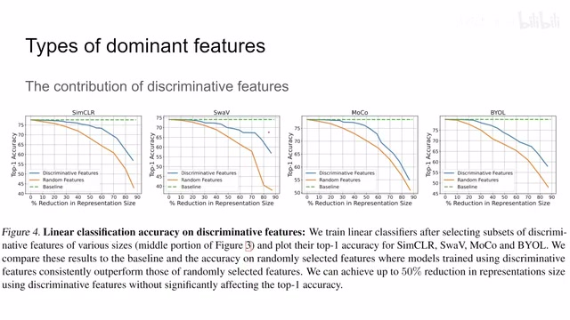
00:03:58–00:04:14 · 画面 01700:04:14–00:04:29 · 画面 018
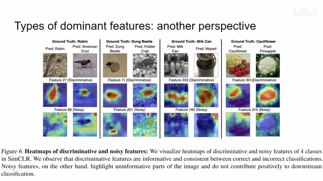
00:04:14–00:04:29 · 画面 018那这些 discriminative feature 它出来关注的区域都是跟我们分类相关的，像其他的这些 noisy 的这些 feature 它关注的区域呢都是一些不相关的东西。那最后呢，我们来看作者提出的这个最核心的这个 qscore。那这个 qscore 呢，它本质上是反映了这个 sparsity，也就是这个 representation 它的稀疏性有多稀疏。那同时呢，根据作者发现的这个 discriminative feature。
00:04:29–00:06:29 · 画面 019
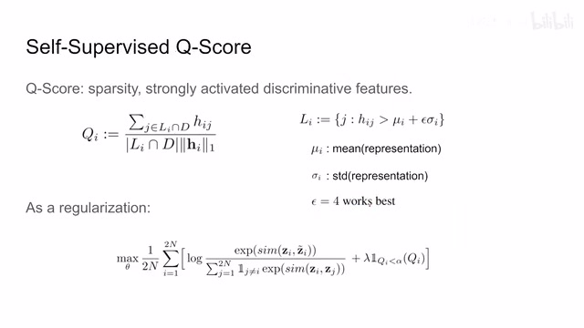
00:04:29–00:06:29 · 画面 019用它来衡量说这个我们当前的 representation 和这个 discriminative feature 它有多匹配，就是它的 dominant feature 跟它有多匹配。那在这两个标准的共同要求下呢，来衡量当前这个 representation 的质量。那我们来看它的表达式啊，首先是这个 li 交上这个 d，这个 li 呢就是我们之前说的这一个样本的这个 dominant feature。这个 dominant feature 呢。
这个样本里面的 representation 里面的每一个 feature 的平均值和标准差，然后 4 倍的标准差来决定的，就你大于这个值对吧，它就是 dominant。那这个 d 呢就是这一个方法在这一个数据集上它学出来这个 discriminative features。那它呢就是我们之前说的根据统计这个每一个 feature 它是 dominant 的 feature 的数量。
然后取中间这一段来决定出来的。那这两个 feature 取一个交集嘛，交到的也就是说，我是 discriminative feature 同时也是这个 dominant feature 的时候，我把这个 feature 的这个值就是这个 h 这个值给它加起来。那这个是它的分子的部分。那这个是符合作者之前的观察，就是 discriminative feature 它对我们的分类是有帮助的。
但是呢，我们通过作者提出的方法找到了这个 discriminative feature 是不是真正我们想要的那些 feature，这里还是存在疑问的。那分母上呢就是这个交集的它的这个尺寸，就是我有多少个 feature 是在这个交集里面。然后呢，另一个分母的项呢是整个的这个 representation 它的这个 L1。
那这样子呢，你可以看到这个 qscore 就符合作者的设计意图了对吧，我希望他有更多的跟这个 discriminative feature 有 intersection 相交的部分。那这个是这个 qscore。那当然呢，作者还说这个 qscore 你不仅可以用它来评价这个 representation 的质量，你还可以把它作为一个正则项放在里面。因为正如我们之前所说的，按照作者的提出的方法来看，你的 discriminative feature 和这个 dominant feature 都是可以通过没有 label 的方法来选择出来的。所以呢，它是可以在这个 self-supervised learning 进行的过程中来加这么一个正则项来进行约束的同时呢，你看到它作为正则项加到这个
00:06:29–00:06:39 · 画面 020
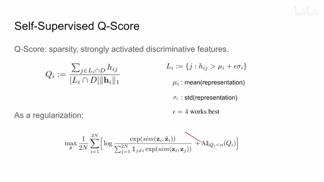
00:06:29–00:06:39 · 画面 02000:06:39–00:06:40 · 画面 021
00:06:39–00:06:40 · 画面 02100:06:40–00:06:44 · 画面 022
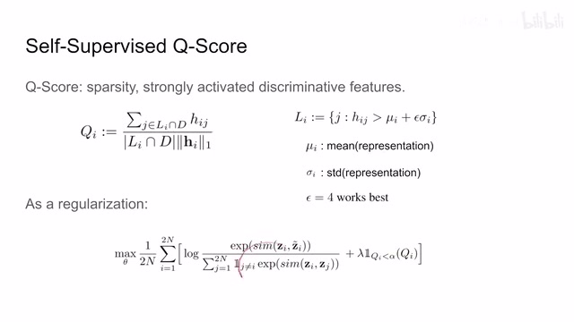
00:06:40–00:06:44 · 画面 02200:06:44–00:07:01 · 画面 023
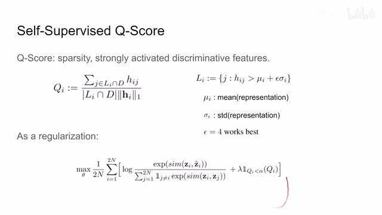
00:06:44–00:07:01 · 画面 023loss 里面的时候呢，他这里有一个 trigger，就是只有在这个 qscore 小于一个阈值的时候，也就是当我们这个 representation 不那么稀疏的时候，他才去加这个 loss 加这个正则，否则呢，他是不加这个正则的。那么当然呢，作者通过实验告诉我们说，ok 加了这个正则项之后改善了这个 linear accuracy，但是呢，你仔细看他的实验也没有去探讨不同的这个评价的标准，比如说 KNN 啊，比如说 fine-tuning 啊这些东西
00:07:01–00:07:45 · 画面 024
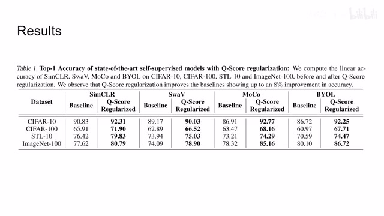
00:07:01–00:07:45 · 画面 024然后呢，不同的这个模型的尺寸，特别是标题又起的这么大。那今天呢，我是作为一个 PhD Candidate 给你们讲的，我不是论文作者，但是我见的太多了，我有必要告诉你们一点人生的经验，这个闷声大发财这是最后的。那总的来说呢，今天我们把这篇文章拉出来聊一聊，就是因为我们希望看到更多的对这个 Self-Supervised Learning 学出来 Representation 的这些分析。那么以上呢，就是我对这篇论文的一个快速的整理。那么感谢您的收看，再见
00:07:45–00:07:45 · 画面 025
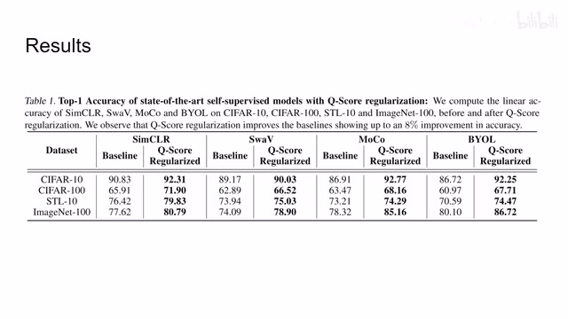
00:07:45–00:07:45 · 画面 025转写与来源说明 · 0 个自动复核提示
保留 20 个原始语音片段，0 个片段触发自动复核提示。提示仅用于定位可能的术语、重复或识别问题，不等于已确认错误。
讲解画面为源视频截图（640×360），不是可编辑 PPT 文件。全片按每秒 2 帧扫描内容变化，逐步展开页保留；连续动画保留代表画面。清晰度受源视频限制。
原视频：paper/合集_2026-10-16_表征学习/[论文简析]Towards Better Understanding of Self-Supervised Representation[2203.01881].mp4
SHA-256：d3ce6cea2085bbb8b096b5e38c63cc02ddbefd4fdbd06cb7e5aac186efb83494
全文按视频语音与画面制作。原论文可从上方链接下载；完整资料包保留全文、原始逐字稿、字幕和校对记录。